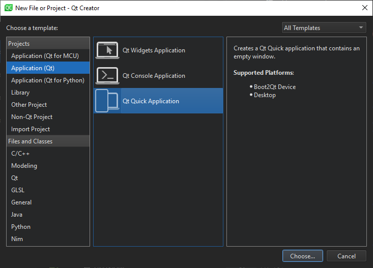

Creating Qt Quick Projects

The following table lists the wizard templates for creating a new Qt Quick project from scratch.
| Category | Wizard Template | Purpose |
|---|---|---|
| Application (Qt) | Qt Quick Application | Creates a Qt Quick 2 application project that can contain both QML and C++ code. You can build the application and deploy it to desktop, embedded, and mobile target platforms. |
| Application (Qt for Python) | Qt for Python - Qt Quick Application | Creates a Python project that contains an empty Qt Quick Application. |
| Other Project | Qt Quick UI Prototype | Creates a Qt Quick UI project with a single QML file that contains the main view. You can preview Qt Quick 2 UI projects in the QML Scene preview tool. You do not need to build them, because they do not contain any C++ code. This project type is compatible with Qt Design Studio. However, use this template only if you are prototyping. You cannot create a full application by using this template. Qt Quick UI projects cannot be deployed to embedded or mobile target platforms. For those platforms, create a Qt Quick application instead. |
| Library | Qt Quick 2 Extension Plugin | Creates C++ plugins that make it possible to offer extensions that can be loaded dynamically into Qt Quick 2 applications. |
Note: The SDK for a particular target platform might install additional templates for that platform. For example, the QNX templates are installed as part of the QNX SDK.
Qt Creator creates the necessary boilerplate files. Some of the files are specific to a particular target platform.
Creating Qt Quick Applications
- Select File > New File or Project > Application (Qt) > Qt Quick Application > Choose.
- In the Project Location dialog, Name field, enter a name for the project. Keep in mind that you cannot easily change the project name later.
- In the Create in field, enter the path for the project files. Select the Use as default project location check box to create new projects in this folder by default. You can move project folders later without problems.
- Select Next (or Continue on macOS) to open the Define Build System dialog.
- In the Build system field, select the build system to use for building and running the project: qmake, CMake, or Qbs.
- Select Next to open the Define Project Details dialog.
- Select the Qt version to develop with in the Minimal required Qt version field. The Qt version determines the Qt Quick imports that are used in the QML files.
- Select the Use Qt Virtual Keyboard check box to add support for Qt Virtual Keyboard to the application.
Note: If you have not installed the Qt Virtual Keyboard module when you installed Qt, an error message will appear when you try to open main.qml for editing. You can use the Qt Maintenance Tool to install Qt Virtual Keyboard.
- Select Next to open the Translation File dialog.
- In the Language field, select a language that you plan to translate the application to. You can add other languages later by editing the project file.
- In the Translation file field, you can edit the name for the translation source file that will be generated for the selected language.
- Select Next to open the Kit Selection dialog.
- Select kits for the platforms that you want to build the application for.
Note: Kits are listed if they have been specified in Tools > Options > Kits (on Windows and Linux) or in Qt Creator > Preferences > Kits (on macOS). For more information, see Adding Kits.
- Select Next to open the Project Management dialog.
- Review the project settings, and select Finish (on Windows and Linux) or Done (on macOS) to create the project.
Qt Creator creates a QML file, main.qml, that you can modify in the Edit mode.
Creating Qt Quick Based Python Applications
The Qt for Python - Qt Quick Application - Empty wizard enables you to create a Python project that contains a main QML file. Specify the minimum PySide version to run the application.
The wizard adds the following imports to the source file to provide access to QGuiApplication and QQmlApplicationEngine:
import os from pathlib import Path import sys from PySide6.QtGui import QGuiApplication from PySide6.QtQml import QQmlApplicationEngine
The wizard also adds a main function, where it creates a QGuiApplication instance and passes system arguments to the QGuiApplication object:
if __name__ == "__main__":
app = QGuiApplication(sys.argv)
...
The following lines in the main class create a QQmlApplicationEngine instance and load the generated QML file to the engine object:
engine = QQmlApplicationEngine() engine.load(os.fspath(Path(__file__).resolve().parent / "main.qml"))
Finally, the wizard adds code that checks whether the file was successfully loaded. If loading the file fails, the application exits with an error code. If loading succeeds, the wizard calls the app.exec_() method to enter the Qt main loop and start executing the Qt code:
if not engine.rootObjects():
sys.exit(-1)
sys.exit(app.exec_())
Open the .qml file in the Edit mode to design a Qt Quick UI, or use Qt Design Studio.
Creating Qt Quick UI Projects
Qt Quick UI Prototype projects are useful for testing or prototyping user interfaces, or for setting up a separate project just for QML editing, for example. You cannot use them for application development, because they do not contain:
- C++ code
- Resource files (.qrc)
- Code needed for deploying applications to devices
For more information about how to turn Qt Quick UI Prototype projects into Qt Quick Application projects, see Converting UI Projects to Applications.
To create a Qt Quick UI Prototype project:
- Select File > New File or Project > Other Project > Qt Quick UI Prototype.
- Select Choose to open the Project Location dialog.
- In the Name field, enter a name for the application.
- In the Create in field, enter the path for the project files. Select the Use as default project location check box to create new projects in this folder by default.
- Select Next (or Continue on macOS) to open the Define Project Details dialog.
- In the Minimal required Qt version field, select the Qt version to develop with. The Qt version determines the Qt Quick imports that are used in the QML files.
You can add imports later to combine Qt Quick basic types with Qt Quick Controls, Qt Quick Dialogs, and Qt Quick Layouts (available since Qt 5.1).
- Select the Use Qt Virtual Keyboard check box to add support for Qt Virtual Keyboard to the application.
Note: If you have not installed the Qt Virtual Keyboard module when you installed Qt, an error message will appear when you try to open main.qml.
- Select Next to open the Kit Selection dialog.
- Select kits for the platforms that you want to build the application for.
Note: Kits are listed if they have been specified in Tools > Options > Kits (on Windows and Linux) or in Qt Creator > Preferences > Kits (on macOS). For more information, see Adding Kits.
- Select Next to open the Project Management dialog.
- Review the project settings, and select Finish (on Windows and Linux) or Done (on macOS) to create the project.
Qt Creator creates the following files:
- .qmlproject project file defines that all QML, JavaScript, and image files in the project folder belong to the project. Therefore, you do not need to individually list all the files in the project.
- .qml file defines a UI item, such as a component or the whole application UI.
- ui.qml file defines a form for the application UI. This file is created if you selected the With .ui.qml file check box.
To use JavaScript and image files in the application, copy them to the project folder.